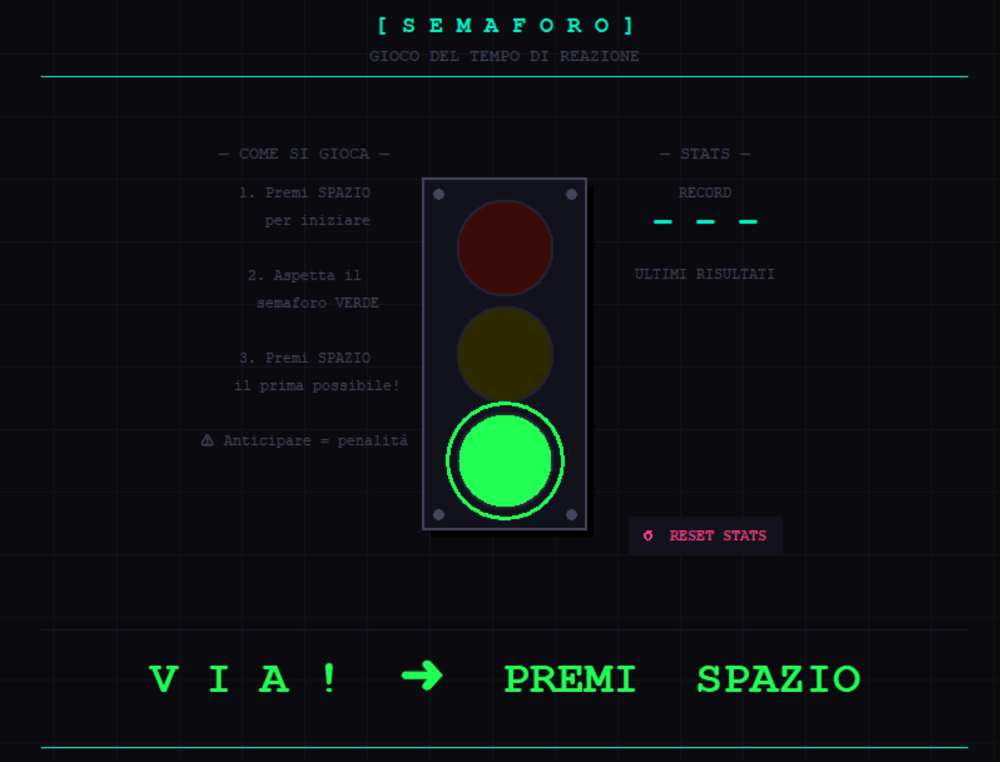
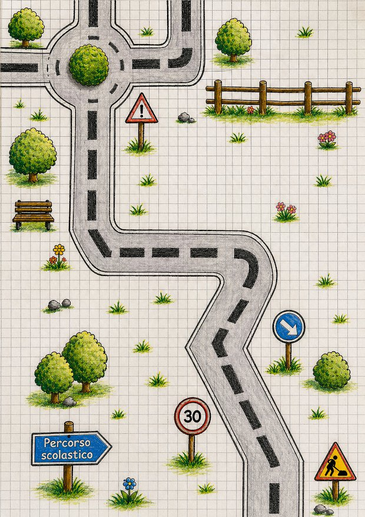

Portfolio informatico
Joseph Grieco
Programmo, sperimento e costruisco interfacce con curiosità: tra web, reti, Python e prototipi interattivi.
Chi sono
Profilo rapido
Mi chiamo Joseph Grieco, ho 18 anni e frequento il terzo anno dell'indirizzo Informatica. Sono curioso, mi piace risolvere problemi e imparare cose nuove. Nel tempo libero mi piace andare in moto e giocare ai videogiochi.
Competenze
Stack e strumenti
Le competenze tecniche acquisite durante l'anno scolastico.
HTML / CSS
Alto
Python
Base
PHP
Intermedio
Reti
Base
Sistemi operativi
Alto
Progetti
Progetti in evidenza
I progetti sviluppati durante l'anno scolastico.

Among Us
Ho sviluppato un prototipo ispirato a Among Us utilizzando il motore grafico Godot Engine. Il progetto consiste nella ricreazione della schermata iniziale del gioco, includendo i principali elementi dell'interfaccia utente come i pulsanti "Online", "Freeplay" e "Offline". L'obiettivo era comprendere e replicare la struttura di un menu interattivo, lavorando sulla gestione degli input, sulla navigazione tra le schermate e sull'organizzazione della UI in Godot. Questo lavoro mi ha permesso di acquisire familiarità con la progettazione delle interfacce nei videogiochi e con le basi dello sviluppo in Godot e GDScript.

Azione Reazione
Ho sviluppato un gioco in Python basato sul tempo di reazione, in cui l'utente deve premere un tasto il più velocemente possibile quando il semaforo diventa verde. Il gioco include una logica di attesa casuale per evitare anticipazioni, un sistema di penalità in caso di input prematuro e una registrazione dei tempi di reazione. È stata inoltre implementata una classifica dei risultati per permettere il confronto tra più tentativi (o tra amici), insieme a una funzione di reset per azzerare le statistiche.
Il mio percorso
Percorso
Una strada fatta di curve, salite e momenti di crescita.

Prima di arrivare qui ho vissuto un periodo scolastico difficile: due anni persi per vicende familiari, poi un percorso paritario online che mi ha tenuto in carreggiata. È stato quel ritardo a darmi la spinta per ricominciare con serietà.
Ho affrontato la scuola con grande determinazione: molte domande ai professori, focus totale sullo studio, voglia di recuperare il tempo perso. Un anno fondamentale per ricostruire basi solide, sia scolastiche che personali.
Più confidenza con i compagni, ma anche più distrazioni. La motivazione è calata rispetto all'anno precedente. Ho comunque mantenuto buoni risultati, soprattutto nelle materie tecniche, e ho vissuto la mia prima esperienza di stage.
Difficoltà legate alle assenze, soprattutto nel periodo di stage. Ma terminato lo stage è arrivata una svolta importante: ho capito quanto la costanza sia fondamentale per raggiungere i miei obiettivi e mi sono impegnato concretamente a migliorare.
Il mio percorso è stato come quella strada nell'immagine — con curve, incroci e segnali di attenzione lungo il tragitto. Ogni anno mi ha insegnato qualcosa e mi ha reso più consapevole e responsabile. Ora voglio continuare su questa strada con impegno e determinazione, fino al diploma.
Curriculum Vitae
Il mio CV
Formazione, esperienze e competenze in formato sintetico.
Formazione
Operatore Informatico
Immaginazione e Lavoro — MilanoCorso triennale ad indirizzo Informatica. Programmazione Python, web design, Arduino, reti e sistemi operativi.
Licenza Media
Acof Olga Fiorini — CastellanzaEsperienze
Stage Curriculare
ECIT S.p.A. — Cernusco sul NaviglioDurante lo stage ho partecipato allo sviluppo di un sito web per una pizzeria, occupandomi del front-end con Vue.js e collaborando anche sul back-end. Ho acquisito competenze base in sviluppo web, Laravel e Git.
Stage Curriculare
Sisthema S.p.A. — MilanoDurante l'esperienza ho supportato la gestione e riorganizzazione della documentazione tecnica ERP, migrandola su BookStack e strutturandola per una migliore consultazione. Ho inoltre presentato lo strumento ai colleghi e collaborato alla risoluzione di problemi di compatibilità tra sistemi.
Competenze tecniche
Lingue
Madrelingua
Livello B2 — scolastico
Contatti
Dove trovarmi
Puoi contattarmi tramite email o trovare i miei lavori online.